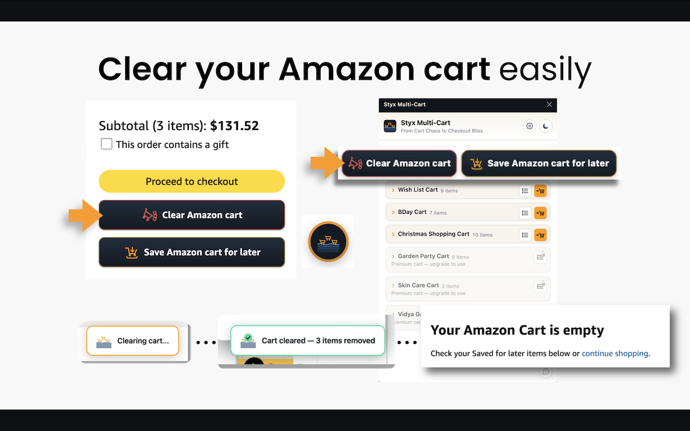
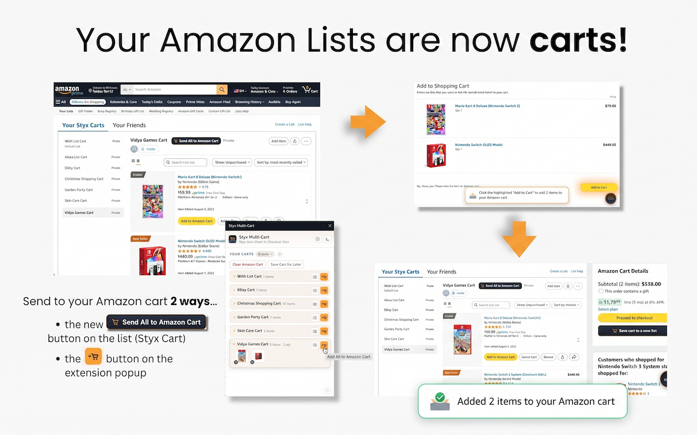
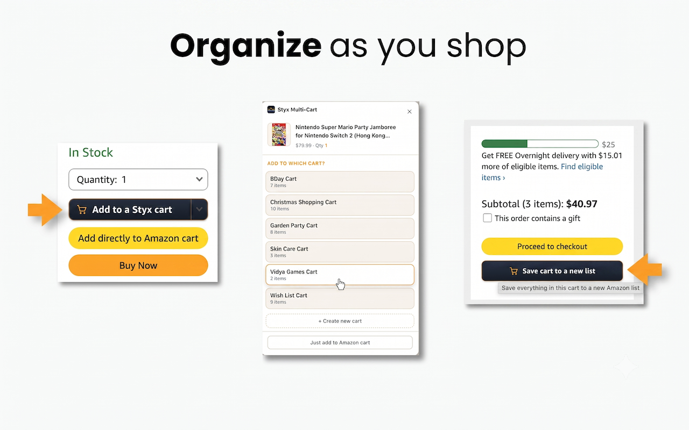

Still deleting items out of your Amazon cart one at a time?
Still running the birthday, the groceries and the home project through a single cart — swapping things in and out, and paying for all of it together, because Amazon only ever gives you one?
Styx turns every Amazon list into a real cart. Keep one per occasion and clear your live cart whenever you want — so you can send different purchases through checkout separately, quickly, just like in a real store.
Works on Chrome, Edge, Brave, Arc & other Chromium browsers

Amazon gives you a single cart and buries your lists three menus deep. Every headache below comes from that one design choice. Styx fixes all of them.
Clearing your Amazon cart is a single click instead of a dozen. Always free, always unlimited — and your Saved for Later is never touched.
Keep a cart per occasion and send them to checkout one at a time — so the gift, the groceries and the work supplies can each go on a different card, like separate trips to a real store.
Save a full cart for later in one move, add to any cart while you browse, and pull a whole cart back into Amazon when you're ready. Your carts are Amazon lists, so they're already on every device you sign in to.
The first time you run Styx on Amazon, a quick-start prompt points at the round Styx button in the lower-right corner. That button is your home base for clearing, creating, organizing and restoring carts.
After install, visit Amazon and look for the Styx icon at the bottom-right of the page. The first-run prompt gives you the short tour; choose Start guide to open the Styx panel.
On an Amazon cart page, open Styx and choose Clear Amazon cart. Use Save & Clear when you want Styx to preserve those items as a cart before emptying Amazon's live cart.
Styx treats Amazon lists as reusable carts. Create a new cart from the panel, or use your existing Amazon lists for occasions like gifts, groceries, work supplies or projects.
Product pages show Add to a Styx cart. You can also keep Styx's Add-to-Cart intercept on, so Amazon's normal Add to Cart flow lets you choose the Styx cart first.
When a cart is ready, use Send All to Amazon Cart on the list page or the send button in the Styx panel. Styx loads the items into Amazon's live cart so you can check out normally.
Repeat the same flow for each occasion. Clear the live cart between purchases, then send only the cart you want to pay for back to Amazon.
The quick-start guide above maps to the real extension screens below.

Open the Styx panel and hit Clear Amazon cart. Styx works through every item for you instead of making you delete them one at a time — and your Saved for Later is never touched. Not ready to lose them? Choose Save & Clear and the whole cart is tucked into a new cart first. Clearing is free and unlimited.

Every Amazon list shows up as a reusable cart — in the floating Styx panel and on the relabeled Your Styx Carts page. Send a whole cart back to Amazon two ways: the Send All to Amazon Cart button on the list, or the ↗ button in the panel. Styx skips out-of-stock items and asks which edition you want for books.

On any product page, a branded Add to a Styx cart button sits right next to Add to Cart — pick which cart it belongs in (Birthday, Groceries, Vidya Games…) so you build the right cart without pushing everything to checkout. You can also save a full cart to a new list straight from the Amazon cart page.
A quick walkthrough of the extension in action on amazon.com — saving and clearing your Amazon cart, your carts in the panel, and sending a whole cart to checkout.
Clearing and saving are always free and unlimited. You also get 3 carts free; go Premium for unlimited — $9.99/year or $19.99 once. Your live Amazon cart is always free and never breaks. Built to respect your privacy.